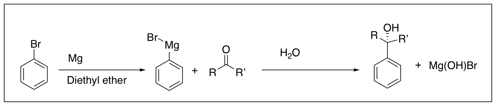
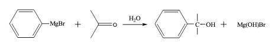

The objective of the experiment is to prepare an alcohol by a Grignard reaction of an unknown carbonyl compound and to identify the unknown carbonyl compound. You will watch a video showing the preparation of the Grignard reagent and read the procedure for the reaction with the unknown carbonyl compound. You will then be given data including melting points, NMR spectra, and GC-MS spectra with which you will identify your unknown.

Figure 1. Synthesis of Grignard Reagent and Reaction with Carbonyl Compound
The preparation of the Grignard reagent, RMgX, is represented in equation 1, where RX represents an organic halide. The exact nature of the Grignard reagent in solution is unknown. It is believed to be a mixture of numerous species. These species are highly solvated by ether and are complexed with one another. It is customary to represent the Grignard reagent by the formula RMgX when writing chemical equations, but it should be kept in mind that the species in solution are of a much more complex nature.
Equation 1. Preparation of the Grignard reagent, RMgX
The ether solvent is an essential part of the Grignard reagent, for ether is known to form a complex with the magnesium which is present in the reagent. Several cases are known where the Grignard reagents have been prepared in the absence of ether, but the yields are not good. Satisfactory yields are usually obtained when the ether is present. The most common ether solvent is ethyl ether, (C2H5)2O, due to its low cost and ease of removal (its boiling point is 36 °C). The organic halide may, in general, be of any organic moiety (alkyl or aryl) and the halide may be bromide, chloride, or iodide.
The preparation of the Grignard reagent must be carried out under anhydrous conditions and, if possible, in the absence of oxygen. In the laboratory, we would have conducted this experiment in an inert N2 atmosphere; however the video demonstration is conducted in the presence of oxygen. The procedure in the lab manual notes where and how N2 should be used while conducting this experiment, but it should be noted that the video of the preparation of the Grignard reagent differs in this way.
It is exceedingly important to maintain completely dry conditions throughout, for the presence of water inhibits the initiation of the reaction, as well as destroying the reagent once it is formed.
The reaction that occurs when the Grignard reagent comes in contact with water is shown in equation 2.
RMgX + H2O → RH + HOMgX (2)
The reagent is a strong base, as one of the carbon atoms bears substantial negative charge (R- Mg2+X-). The Grignard reagent, acting as a base, removes a proton from water, which acts as an acid. The overall effect is the destruction of the reagent, with the formation of a hydrocarbon (RH) and a basic magnesium salt. Other compounds, such as alcohols and carboxylic acids, also destroy the Grignard reagent by analogous acid-base reactions.
In addition to the reaction with water (equation 2), there are other side reactions that may occur during formation of the Grignard reagent, as shown in equations 3-5.
Reaction with Oxygen:
2RMgX + O2 → 2 RO-+MgX (3)
Reaction with Carbon Dioxide:
RMgX + CO2 → RCO2- +MgX (4)
Coupling:
RMgX + RX → R-R + MgX2 (5)
It is possible to minimize these reactions by taking certain precautions when carrying out the experimental work. The reactions with oxygen and with carbon dioxide may be avoided by carrying out the reaction under an inert atmosphere (such as nitrogen or helium gas). For many practical purposes, an insert gas is not essential since, when ethyl ether is used as a solvent, it excludes a certain amount of air from the reaction vessel due to its very high vapor pressure.
The coupling reaction (equation 5) is an example of a Wurtz reaction. It is not possible to eliminate this coupling reaction completely, but it may be minimized by using dilute solutions so as to avoid localized high concentrations of halide. This can be done by using very efficient stirring and by slowly adding the halide to the magnesium in ether. Normally the rate of addition of halide (dissolved in ether) and the rate of reflux (when ethyl ether is used) should be adjusted so that they are about equal. Alkyl iodides are much more prone to coupling reactions than are the bromides and chlorides, so that the latter are preferable for preparing Grignard reagents even though they are less reactive. If water has been carefully excluded, the most important side reaction is the coupling process, but it is not a significant problem. Once the reagent is prepared, it is used directly in subsequent reactions. The small amount of by-product need not be separated from the reagent before adding the carbonyl compound.
Videos:
Set-up video: https://www.youtube.com/watch?v=X70AKnefB-4
Video of preparation of Grignard reagent: https://www.youtube.com/watch?v=YsrB0wPmnVM